توسعه وب اپلیکیشن
صفحه ۲۹۵
واحد یادگیری ٢
توسعه وب اپلیکیشن
آیا تابهحال اندیشیدهاید
یک سایت چطور با پایگاه داده ارتباط برقرار میکند؟
یک وب اپلیکیشن چطور کاربر مهمان را تشخیص میدهد؟
اطلاعاتی که کاربران در فرمها وارد میکنند، چطور در پایگاه داده ذخیره میشود؟
برنامهنویس چگونه میتواند از بروز خطاها در سایت جلوگیری کند؟
در پایان از هنرجو انتظار میرود
1 بتواند با استفاده از جنگو در پایگاه داده تغییرات اعمال کند.
2 مفهوم فیلد و جدول در جنگو را درک کرده و درباره آن استدلال نماید.
3 با استفاده از جنگو، بتواند اطلاعات فرمها را در پایگاه داده ذخیره نمایند.
4 با مفهوم ORM در جنگو آشنا شود و بتواند پرسوجوهای ساده بنویسد.
5 مشکلات و باگهای مرسوم در وب اپلیکیشنها را بشناسد و بتواند بهصورت عملی مشکلات را برطرف نماید.
استاندارد عملکرد
هنرجو بتواند با ساخت Model در جنگو و استفاده از فرمهای HTML ارتباط با پایگاه داده را پیادهسازی کند و اطلاعاتی که کاربران وارد میکنند را در جداول ذخیره و بازیابی نماید.
صفحه ۲۹۶
ساخت جدول شهر در پایگاه داده
تا این مرحله سایت شما فقط دمای شهرهایی را نمایش میدهد که در view مشخص کردهاید، یعنی در show_temp_view اسم شهر ثابت است و همیشه دمای یک شهر، نمایش داده خواهد شد. روش بهتر این است که کاربر مهمان، قابلیت انتخاب شهر موردنظرش را داشته باشد.
جهت پیادهسازی این قابلیت، نیاز است، اطلاعات شهرها را به همراه طول و عرض جغرافیایی هر شهر، در پایگاه داده ذخیره کنید، سپس وقتی کاربر وارد سایت شد، لیستی از شهرها را مشاهده کرده و با کلیک روی نام شهر، دمای شهر موردنظر خود را ببیند.
برای پیادهسازی این قابلیت باید یک جدول (table) در پایگاهداده ایجاد کنید.
هر app یک فایل با نام models.py دارد. جنگو برای ساخت جداول از مدلها (model) استفاده میکند. هر مدل در جنگو معادل یک جدول، با همان نام، در پایگاهداده است. در اولین قدم باید درون فایل models.py کلاس لازم برای تعریف جدول و ستونهای جدول ایجاد شود.
فایل models.py در weather app را باز کنید. سپس محتوای این فایل را همانند شکل 27 تغییر دهید.
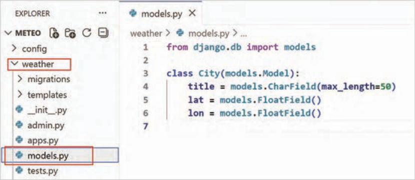
شکل 27 ساخت مدل City
توضیحات کدها:
خط 1: ماژول models از ماژول django.db، وارد (import) شده است. در واقع با این خط، ابزارها و کلاسهای لازم برای تعریف مدلهای پایگاهداده (Database Models) وارد (import) میشوند.
خط 3: کلاس City جهت ساخت جدول شهرها با ارثبری از Model ایجاد شده است. Model کلاس پایه جنگو برای ساخت مدلها (جدولهای پایگاهداده) است و امکانات لازم برای ارتباط با پایگاهداده را فراهم میکند.
خط 4: این دستور یک فیلد برای نگهداری نام شهر بهصورت متن، در جدول میسازد که حداکثر 50 کاراکتر طول دارد. برای CharField تعیینکردن max_length اجباری است.
خط 5: از FloatField جهت نگهداری اعداد اعشاری استفاده شده است. عرض جغرافیایی (Latitude) و طول جغرافیایی (Longitude) هر دو عدد اعشاری هستند.
صفحه ۲۹۷
برای استفاده از مدل City، نیاز است که جدول معادلش در پایگاهداده ساخته شود.
در ترمینال دستور makemigrations را همانند شکل 28 اجرا کنید.
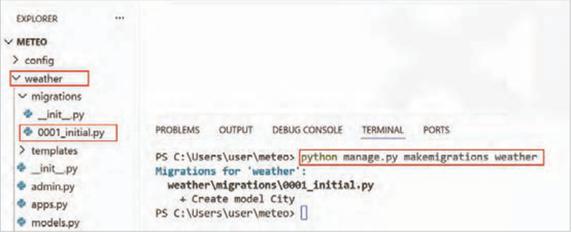
شکل 28 اجرای دستور makemigrations
وقتی makemigrations را اجرا میکنید، درون weather app، فایلی با نام 0001_initial.py در پوشه migrations ایجاد میشود. این فایل کدهای لازم جهت تبدیل مدل به جدول واقعی را آمادهسازی میکند.
در مرحله بعد دستور migrate را همانند شکل 29 در ترمینال اجرا کنید.
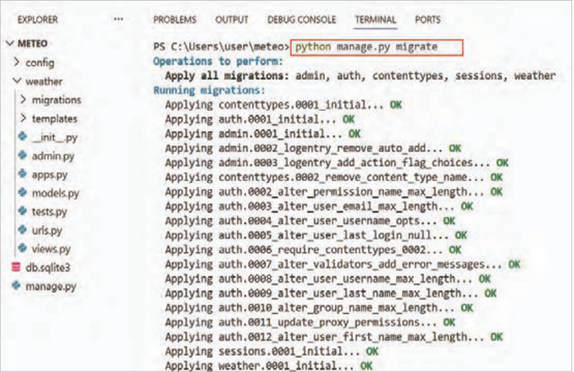
شکل 29 اجرای دستور migrate
صفحه ۲۹۸
پس از اجرای migrate، جدولهای پیشفرض جنگو و جدول city در پایگاهداده db.sqlite3 ساخته میشوند.
مشاهده جداول پایگاهداده برای مشاهده ساختار و محتوای جداول درون پایگاهداده، میتوانید افزونه SQLite Viewer را بهعنوان یک ابزار کمکی نصب کنید. برای نصب این افزونه مطمئن شوید که اینترنت متصل باشد (شکل 30).
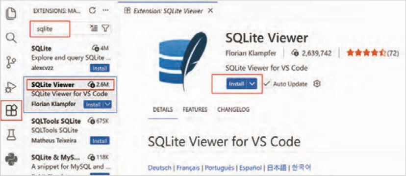
شکل 30 جستوجوی افزونه SQLite Viewer
پس از نصب افزونه ذکر شده، با کلیک بر روی فایل db.sqlite3 جدولهای پیشفرض جنگو و جدول city را مشاهده خواهید کرد (شکل 31).
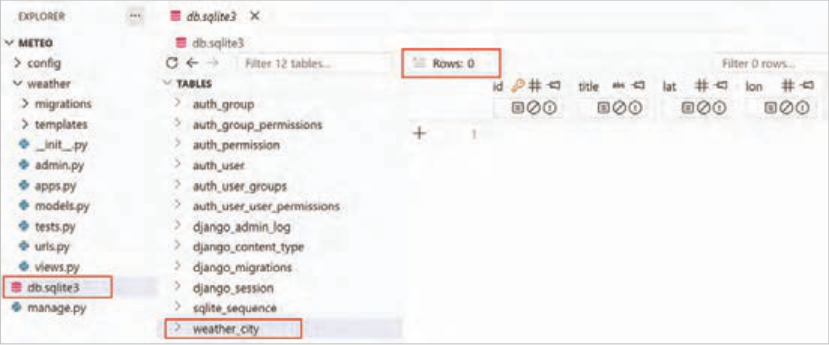
شکل 31 جداول پایگاهداده
صفحه ۲۹۹
همانطورکه درشکل 31 مشخص است، جدول city با پیشوند weather ساخته شده است. با کلیک روی جدول weather_city، لیست فیلدها در سمت راست نمایش داده میشود. در حال حاضر هیچ رکوردی در جدول city وجود ندارد.
با افزونه SQLite Viewer فقط میتوانید محتوا و ساختار جداول را مشاهده کنید و امکان ذخیره اطلاعات وجود ندارد.
برای تغییر محتوای جدول city و یا افزودن نام شهرهایی جدید به جدول لازم است وارد پنل ادمین جنگو شوید. البته هنوز نمیتوانید از طریق پنل admin دادههای مربوط به شهرها را وارد دیتابیس کنید، چرا که هنوز کاربر admin تعریف نشده است؛ بنابراین در مرحله بعد نوبت تعریف کاربر admin است.
پنل مدیریت جنگو برای ورود به پنل ادمین، نیاز به نام کاربری و رمز عبور است. دستور زیر را در ترمینال وارد کنید:
python manage.py createsuperuser
جنگو از شما نام کاربری درخواست میکند (شکل 32).
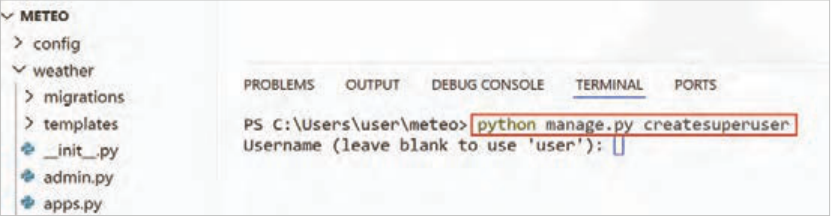
شکل 32 اجرای دستور createsuperuser
همانگونه که مشخص است، نام کاربر جاری ویندوز را بهعنوان نام کاربری پیشنهاد داده است.
میتوانید نام کاربری admin و یا هر نام کاربری دیگری را بهدلخواه وارد کنید، سپس بهترتیب، ایمیل، کلمه عبور و تکرار کلمه عبور را وارد کنید (شکل 33).
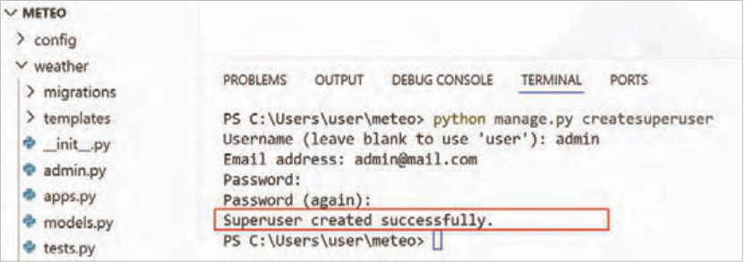
شکل 33 ایجاد موفق کاربر ادمین
صفحه ۳۰۰
نکته
میتوانید ایمیل را خالی وارد کنید، همچنین اگر رمز عبور سادهای وارد کنید، همانند شکل 34 به شما اخطار خواهد داد.
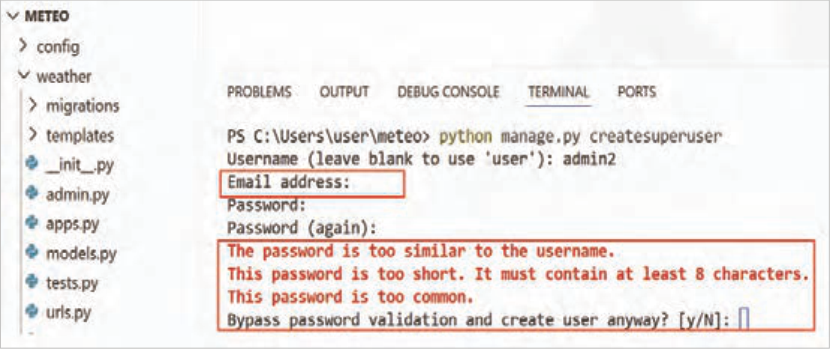
شکل 34 اخطار سادهبودن رمز ادمین
پس از ایجاد کاربر ادمین، با افزونه SQLite Viewer میتوانید، کاربر ایجاد شده را در جدول auth_user همانند شکل 35 مشاهده کنید.
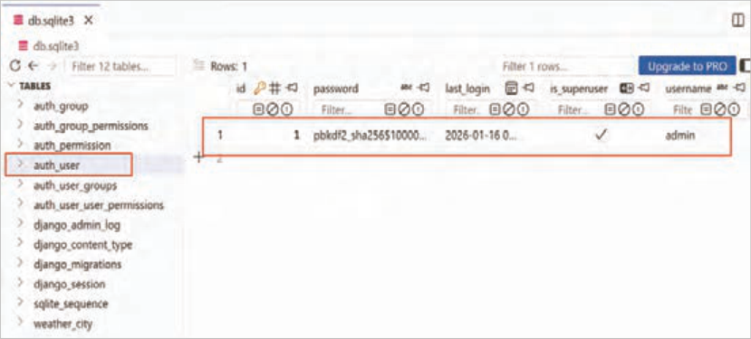
شکل 35 نمایش کاربر admin ایجاد شده در دیتابیس
صفحه ۳۰۱
اکنون جهت ورود به پنل مدیریت ادمین جنگو، سرور جنگو را روشن کرده و صفحه ادمین را با تایپ آدرس زیر در نوار آدرس مرورگر، باز کنید:
http://127.0.0.1:8000/admin/
سپس با نام کاربری و رمز عبوری که ساختهاید، وارد شوید.
پنل ادمین همانند شکل 36 نمایش داده خواهد شد.
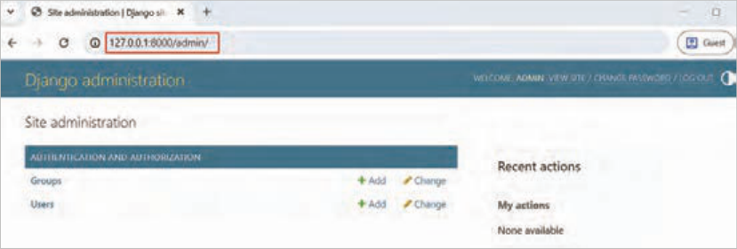
شکل 36 ورود موفق به پنل ادمین جنگو
در قسمت 1Authentication and Authorization با استفاده از Users میتوان کاربران سایت را مشاهده و مدیریت کرد.
با استفاده از دکمه add میتوان کاربر جدید ایجاد کرد. برای ایجاد کاربر جدید، لازم است فیلدهای نام کاربری، رمز عبور و تکرار رمز عبور را وارد کرده و دکمه save را بزنید (شکل 37).
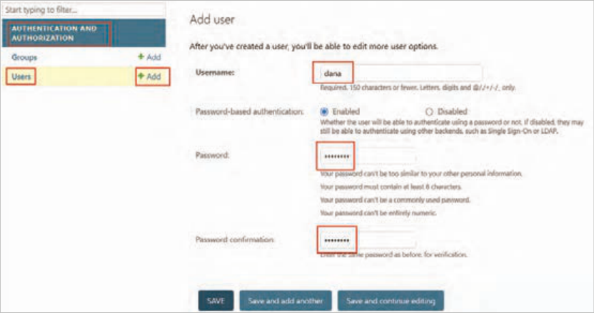
شکل 37 فرم ساخت کاربر جدید
1- احراز هویت و مجوز
صفحه ۳۰۲
پیغام ذخیره موفقیتآمیز همانند شکل 38 مشاهده خواهید کرد. در این مرحله میتوانید اطلاعات تکمیلی، مثل نام، نام خانوادگی، ایمیل و… را برای کاربر ایجاد شده ثبت کنید.
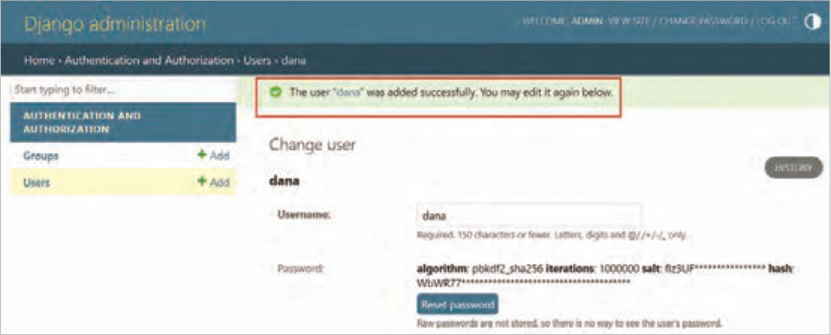
شکل 38 ذخیره موفق کاربر
برای مشاهده لیست کاربران ایجاد شده، روی Users کلیک کنید (شکل 39).
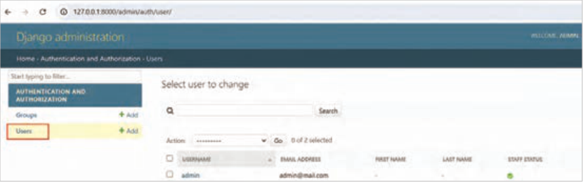
شکل 39 مشاهده لیست کاربران
فعالیت
با کمک هنرآموز خود، کاربر دیگری ایجاد کنید. سپس با کاربرهای مختلف در پنل ادمین login کرده و تفاوت کاربرهای مختلف را بررسی کنید.
افزودن جدول شهر به پنل ادمین اگر دقت کرده باشد در شکل 36، در پنل ادمین جدول شهرها مشاهده نشد، با انجام مراحلی که در ادامه آمده است، میتوانید جدول City را به پنل ادمین اضافه کنید.
صفحه ۳۰۳
هر app در جنگو یک فایل admin.py دارد. فایل admin.py در weather app را باز کنید و همانند شکل 40، مدل City را به ادمین جنگو معرفی کنید.
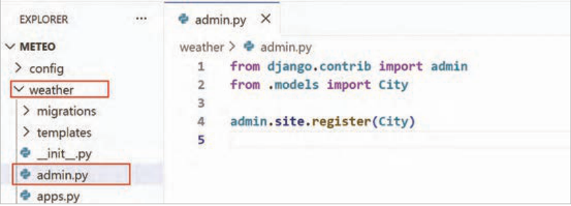
شکل 40 معرفی مدل City به پنل ادمین جنگو
توضیحات کدها:
خط 1: ماژول admin جهت مدیریت پنل ادمین از contrib وارد (import) شده است.
خط 2: مدل City از فایل models.py وارد (import) شده است.
خط 4: مدل City با دستور register به پنل ادمین معرفی شده است.
اکنون فایل را ذخیره کنید، سپس مرورگر را refresh کنید، جدول city به ادمین جنگو اضافه شده است و حرف s به انتهای نام مدل اضافه شده است (شکل 41).
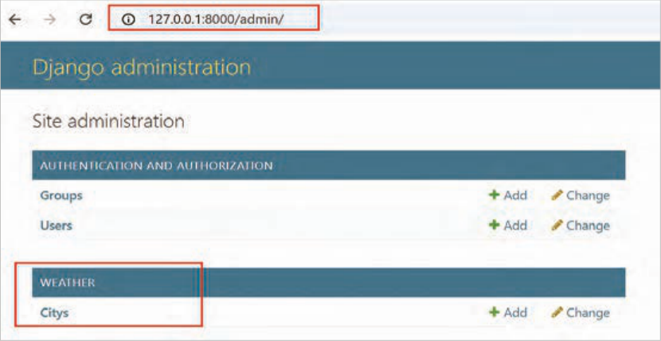
شکل 41 اضافه شدن City به پنل ادمین
صفحه ۳۰۴
وارد کردن اطلاعات شهرها در پنل ادمین، روی دکمه Add (مقابل Citys) کلیک کنید، فرم ثبت شهر (Add city) را مشاهده خواهید کرد (شکل 42) .
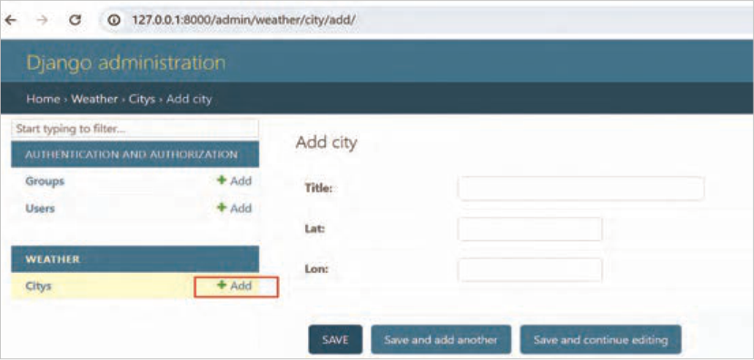
شکل 42 فرم Add city
فعالیت
با استفاده از اطلاعات جدول 2، چند شهر را با فرم Add city در پایگاه داده ذخیره کنید.
جدول 2 طول و عرض جغرافیایی چند شهر
نام شهر
عرض جغرافیایی (lat)
طول جغرافیایی (lon)
میناب27.1478
57.0738
همدان.798137
.514648
تهران.721935
.334751
الشتر33.8632
.261748
تفرش.693634
.015450
بابل36.5387
52.6765
جهرم.517728
.574453
تبریز.079238
46.2887
سبزوار36.2152
.667857
صفحه ۳۰۵
فعالیت
با کمک هنرآموز خود، مقدار طول و عرض جغرافیایی چند شهر دیگر را یافته و در پایگاه داده ذخیره کنید.
پس از ثبت شهرها، با کلیک روی Citys، لیست شهرهای ثبت شده نمایش داده میشود (شکل 43).
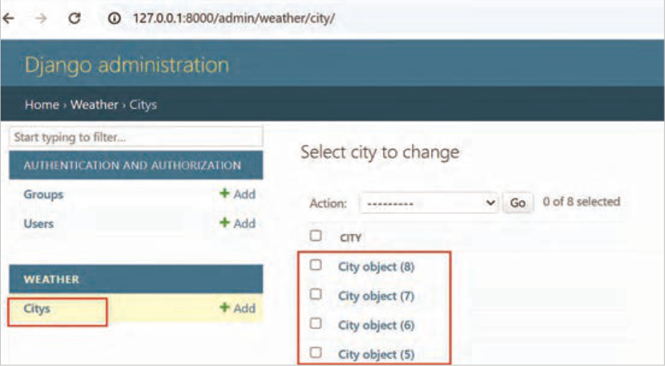
شکل 43 لیست شهرهای ثبت شده
در شکل 43 از City object برای نمایش عنوان هر شهر استفاده شده است. جهت نمایش مناسب عنوان شهرها، فایل models.py را باز کنید و تغییراتی همانند شکل 44 برای مدل City اعمال کنید و فایل را ذخیره کنید.
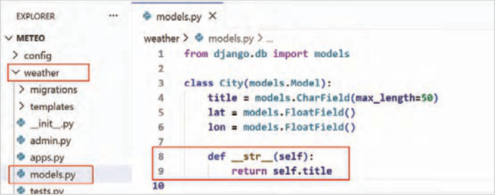
شکل 44 افزودن متد str به مدل شهر
صفحه ۳۰۶
اگر پنل ادمین را refresh کنید، نتیجه بهصورت شکل 45 خواهد بود.
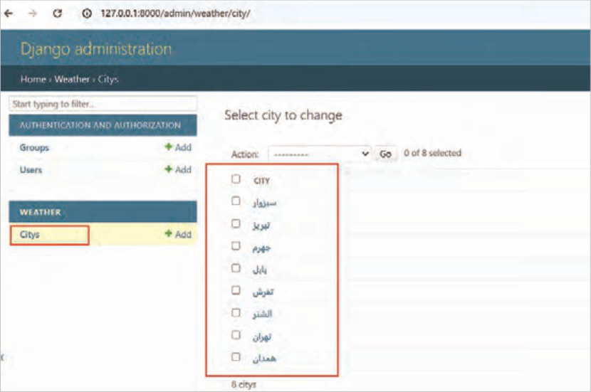
شکل 45 نمایش مناسب عنوان شهرها در پنل ادمین
کنجکاوی
در زبان انگلیسی جمع City برابر با Cities است، اما در پنل ادمین جنگو عنوان جدول بهصورت اشتباه Citys نمایش داده میشود. بررسی کنید چطور میتوان این عنوان را در بخش ادمین جنگو تغییر داد.
آشنایی با ابزار ORM جنگو
اکنون که چند رکورد حاوی نام چند شهر و مختصاتشان را به جدول شهرها اضافه کردید، میتوانید از داخل فایل views.py یکی از رکوردها (مثًلا اولین رکورد) را بخوانید، وضعیت آب و هوای آن شهر را بهدست آوردید و جهت نمایش به فایل index.html ارسال کنید.
برای اینکار لازم است ابتدا ابزار ORM جنگو را بشناسید.
برای کار با پایگاه داده از زبان SQL استفاده میشود، مثلاً دستور SELECT یکی از دستورات اصلی زبان SQL است.
صفحه ۳۰۷
با دستور SELECT بهصورت زیر میتوانید، همه شهرهای جدول City را از پایگاه داده دریافت کنید:
SELECT id, title, lat, lon FROM weather_city
اما در جنگو یک ابزار مفید با نام ORM وجود دارد که کار با پایگاه داده را راحتتر میکند. ORM مثل یک مترجم است. عملیات مربوط به ارتباط با پایگاه داده را با زبان پایتون دریافت و در پشت صحنه، به دستورات SQL ترجمه میکند.
بهعنوان مثال دستور معادل پرس و جوی قبلی در ORM جنگو بهصورت زیر است:
City.objects.all()
در این کد پایتونی، City نام مدل است.
اکنون کد show_temp_view را با استفاده از ORM جنگو همانند شکل 46 تغییر دهید.
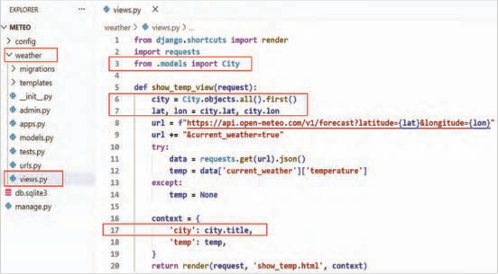
شکل 46 استفاده از ORM جنگو
توضیحات کدها:
خط 3: مدل City از models.py در این فایل import شده است.
خط 6: با استفاده از ORM جنگو، اولین شهر ذخیره شده در جدول شهر، در متغیر city ذخیره شده است.
خط 7: مقدار lat و lon از شهرِ واکشی شده از جدول، دریافت و در متغیرهای lat و lon ذخیره شده است.
خط 17: نام شهر نیز از پایگاه داده دریافت شده و درون دیکشنری context ذخیره شده است.
فایل را ذخیره و صفحه اصلی سایت را باز کنید. دمای شهر همدان نمایش داده میشود.
صفحه ۳۰۸
نمایش لیست شهرها تا اینجا توانستید چند شهر را ذخیرهسازی کنید. قرار است که این شهرها را از پایگاه داده بخوانید و درون سایت بهصورت یک لیست نمایش دهید تا کاربر بتواند با کلیک بر روی شهر دلخواهش، وضعیت دمای آن شهر را مشاهده کند.
اینکار به کمک view و template صورت خواهد گرفت.
در جنگو، view میتواند اطلاعات را از دیتابیس دریافت کرده و سند html را جهت نمایش به کاربر آماده کند.
شکل 47 را مشاهده کنید، request از url به view ارسال شده و view با استفاده از model و template، اطلاعات را جهت نمایش به کاربر آماده میکند.
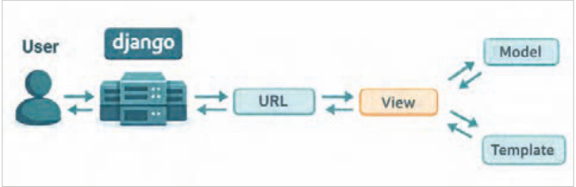
شکل 47 دریافت اطلاعات از مدل توسط View
جهت نمایش لیست شهرها در صفحه اصلی سایت میتوانید چهار مرحله را بهصورت زیر انجام دهید:
1 ساختن یک تابع با نام city_list_view در Views.py
2 ساختن یک template با نام city_list.html
3 تغییر و تنظیم فایلurls.py
4 قرار دادن لینک «لیست شهرها» در صفحه اصلی مرحله اول: یک view با نام city_list_view همانند شکل 48 ایجاد کنید.
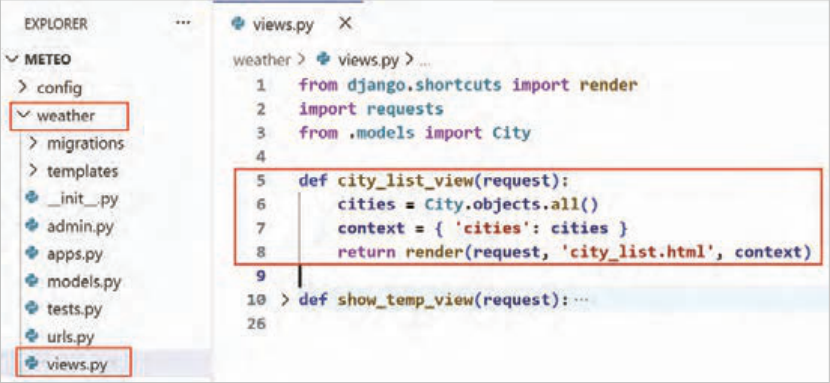
شکل 48 افزودن city_list_view
صفحه ۳۰۹
توضیحات کدها:
خط 6: با استفاده از ORM جنگو یک Query اجرا شده و لیست همه شهرها از جدول City واکشی شده است. ORM جنگو دستورات مختص به خود را دارد و این دستورات به کدهای SQL تبدیل شده و توسط پایگاه داده اجرا میشوند. سپس نتیجه دستور در متغیری با نام cities ذخیره شده است.
خط 8: دیکشنری context برای city_list.html ارسال شده است، مقدار value این دیکشنری یعنی cities در خط 6 مقداردهی شده است.
مرحله دوم: اکنون یک فایل html با نام city_list.html درون پوشه templates ایجاد کنید، کد این فایل را همانند شکل 49 وارد کنید.
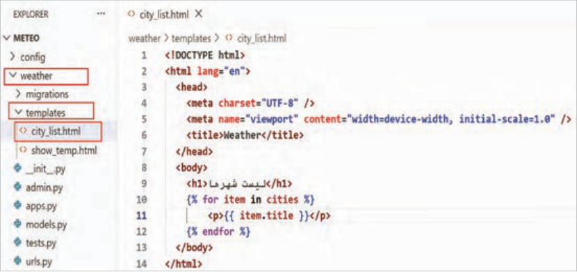
شکل 49 افزودن city_list.html
توضیحات کدها:
خط 10: یک حلقه روی cities اجرا شده است تا لیست شهرها را بهصورت تگ p در مرورگر نمایش دهد.
cities قبًلا در فایل views.py درون یک دیکشنری تعریف شده است.
خط 11: با استفاده از {{ }} میتوانید به فیلدهای هر item دسترسی داشته باشید. title فیلدی است که برای عنوان شهر، در مدل City تعریف کردید.
خط 12: حتمًا باید حلقه for را با endfor خاتمه دهید، در غیر اینصورت در مرورگر با خطا مواجه خواهید شد.
صفحه ۳۱۰
مرحله سوم: فایل urls.py در weather app را همانند شکل 50 تغییر دهید.
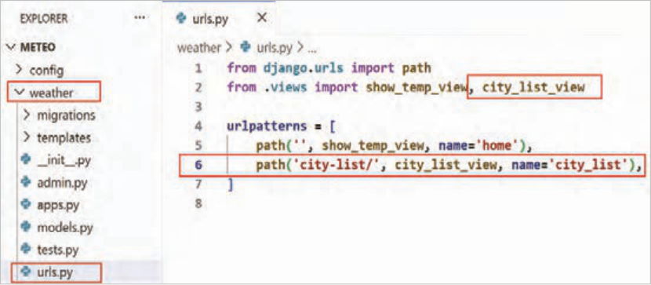
شکل 50 افزودن path لیست شهرها به urls.py
توضیحات کدها:
خط 6: یک path جدید جهت استفاده از city_list_view اضافه شده و به این معنی است که لیست شهرها
در آدرس /listhttp://127.0.0.1:8000/city نمایش داده میشود.
مرحله چهارم: کد show_temp.html را جهت اضافه کردن لینک به صفحه لیست شهرها، همانند شکل51 تغییر دهید.
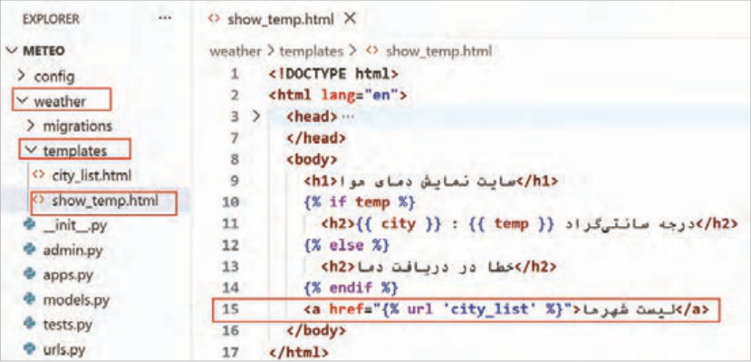
شکل 51 اضافه کردن لینک به لیست شهرها
صفحه ۳۱۱
توضیحات کدها:
خط 15: در این خط تگ a اضافه شده و مقدار href آن برابر عبارت }% 'url 'city_list %{ است.
در این عبارت }% 'url 'city_list %{ یک Template Tag است. از تگ url استفاده شده است و city_list آرگومان آن است. این خط با استفاده از نام مسیر city_list، آدرس لینک لیست شهرها را به صورت خودکار تولید میکند (شکل 52).
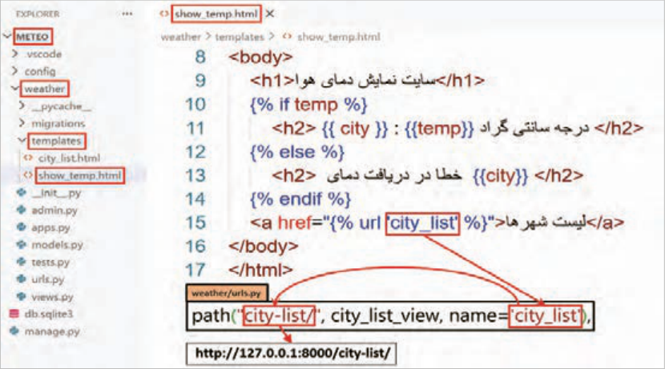
شکل 52 روند کار تگ url در جنگو
اکنون فایل را ذخیره کرده و صفحه اصلی سایت را refresh کنید، لینک اضافه شده را همانند شکل 53 مشاهده خواهید کرد.
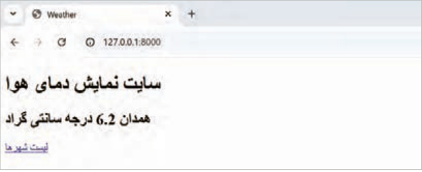
شکل 53 نمایش لینک لیست شهرها
صفحه ۳۱۲
اکنون روی لینِک اضافه شده (لیست شهرها) کلیک کنید، همانند شکل 54، لیست شهرها را مشاهده خواهید کرد.
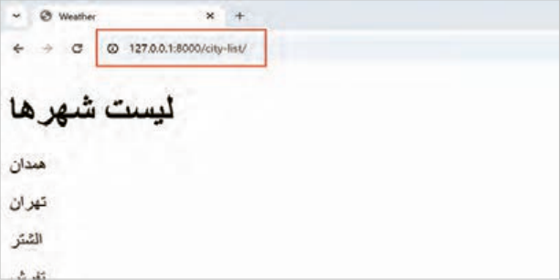
شکل 54 نمایش لیست شهرها
نمایش دمای شهر انتخاب شده توسط کاربر شهرهایی که در لیست شهرها نمایش داده میشوند، قابلیت کلیک ندارند، لازم است تغییراتی اعمال کنید تا کاربر امکان کلیک کردن روی شهر مورد نظر خود را داشته باشد، تا دمای شهر انتخاب شده، نمایش داده شود.
ابتدا فایل city_list.html را باز کرده و همانند شکل 55، تغییرات مورد نظر را اعمال کنید.
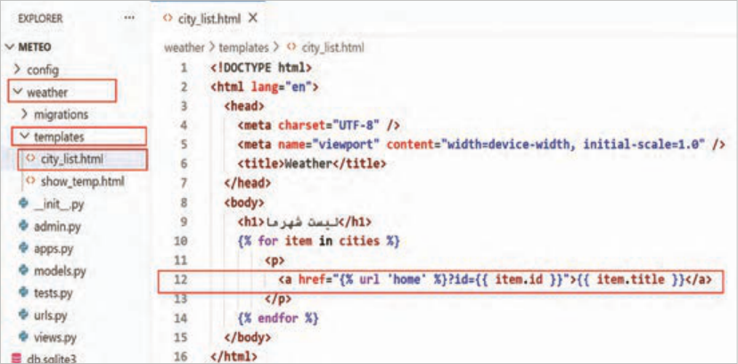
شکل 55 افزودن لینک به هر شهر
صفحه ۳۱۳
توضیحات کدها:
خط 10: برای اینکه نام شهرها قابلیت کلیک شدن داشته باشند، یک تگ a درون تگ p ایجاد شده و جهت نمایش عنوان لینک، از متغیر {{ item.title }} استفاده شده است. آدرس لینک (href) به صفحه اصلی اشاره کرده و متغیر {{ item.id }} به پارامتر id مقدار داده است.
این کد id را به درخواست GET اضافه و به صفحه اصلی ارسال میکند. به عنوان مثال اگر آیدی شهر انتخاب شده 11 باشد، کاربر به آدرس زیر منتقل میشود:
http://127.0.0.1:8000/?id=11
در گام بعد، views.py را باز کنید و show_temp_view را همانند شکل 56 تغییر دهید.
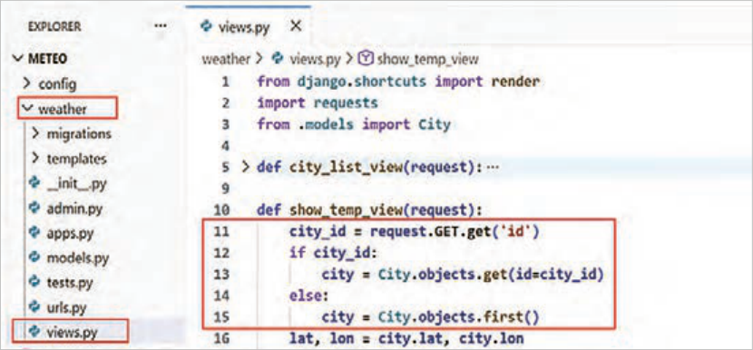
شکل 56 استفاده از id جهت انتخاب شهر
توضیحات کدها:
خط 11: مقدار پارامتر id که از طریق متد GET در نوار آدرس ارسال شده است، در متغیر city_id ذخیره میشود.
درصورتیکه پارامتر id در نوار آدرس وجود نداشته باشد، تابع get('id') که بعد از GET استفاده شده است، مقدار city_id را برابر None ذخیره خواهد کرد.
خط 13: اگر city_id مقدار داشته باشد، با استفاده از ORM جنگو، شهر انتخاب شده توسط کاربر، بهصورت یک شیء (object)، در متغیر city ذخیره میشود.
خط 15: اگر city_id برابر None باشد (id در نوار آدرس وجود نداشته باشد)، اولین شهر از پایگاه داده واکشی میشود.
صفحه ۳۱۴
اکنون تمام فایلها را ذخیره نموده، صفحه لیست شهرها را refresh کنید. همه شهرها لینک دارند.
روی هر شهری که کلیک کنید، در صفحه جدید دمای هوای آن شهر مشاهده میشود (شکل 57).
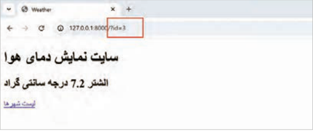
شکل 57 نمایش دمای یک شهر کلیک شده
ورود به سایت (login) در حال حاضر، صفحه اصلی و صفحه لیست شهرها توسط کاربر مهمان و کاربر ادمین قابل مشاهده هستند.
اما هر سایت میتواند صفحههایی داشته باشد که برای دیده شدن نیاز به login (ورود به سایت) داشته باشند. بهعنوان مثال برای دیدن پنل ادمین جنگو، باید با نام کاربری و رمز عبور ادمین login کنید.
شما میتوانید، امکان دسترسی به قسمت افزودن نام شهرها را فقط به کاربرانی اعطا کنید که با نام کاربری و رمز عبور خودشان وارد سایت میشوند.
جنگو خودش بهطور پیشفرض امکاناتی برای مدیریت کاربران دارد تا بتوانید عملیات login و logout را درون سایت اجرا نمایید. فقط کافیست فایل template لازم یعنی login.html را در پوشه مناسب ساخته و در فایل urls اصلی پروژه (موجود در پوشه config) یک path جدید اضافه کنید.
مرحله اول: فایل urls.py اصلی پروژه را همانند شکل 58 تغییر دهید.
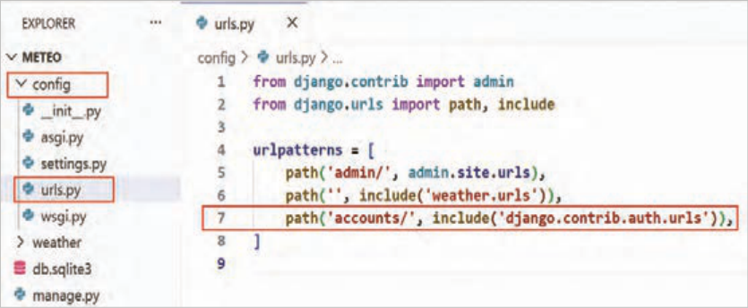
شکل 58 افزودن path جدید جهت login و logout
صفحه ۳۱۵
توضیحات کدها:
خط 7: یک path جدید اضافه شده است و در ادامه منجر به این خواهد شد که App مدیریت کاربران جنگو (auth) به کمک urls و views پیشفرض، فایل login.html را نمایش دهد. برای مدیریت احراز هویت کاربر در پروژه جنگو، از ماژول django.contrib.auth استفاده شده است.
با اضافهکردن این خط کد به فایل urls.py، امکان ورود، خروج و تغییر رمز عبور به سایت اضافه میشود.
همه این قابلیتها توسط ماژول django.contrib.auth مدیریت میشوند و نیازی به تعریف دستی path دیگری ندارید.
مرحله دوم: در پوشه templates از weather app، یکپوشه جدید با نام registration ایجاد کنید، سپس درون آن یک فایل با نام login.html همانند شکل 59 بسازید.
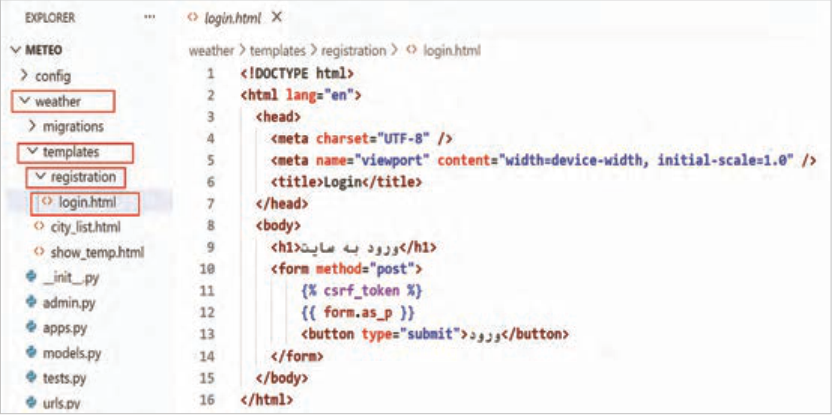
شکل 59 افزودن فایل login.html
توضیحات کدها:
خط 10: یک فرم با متدی از نوع post ایجاد شده است.
خط 11: فیلد csrf_token به فرم اضافه شده است. csrf_token در جنگو یک مقدار امنیتی است که داخل فرمها قرار میگیرد تا مطمئن شود درخواست ارسالشده واقعًا از همان سایت و توسط کاربر مجاز آمده است.
این توکن از حملۀ Cross-Site Request Forgery جلوگیری میکند.
خط 12: فیلدهای فرم را بهصورت تگهای<p> در HTML نمایش میدهد.
خط 13: یک دکمه از نوع submit برای ارسال اطلاعات به سرور جنگو اضافه شده است.
کنجکاوی
در مورد csrf_token و حمله Cross-Site Request Forgery تحقیق و بررسی کنید.
صفحه ۳۱۶
مرحله سوم: در فایل settings.py، تنظیمات لازم را برای بعد از اتمام عملیات login و logout همانند شکل60 انجام دهید.
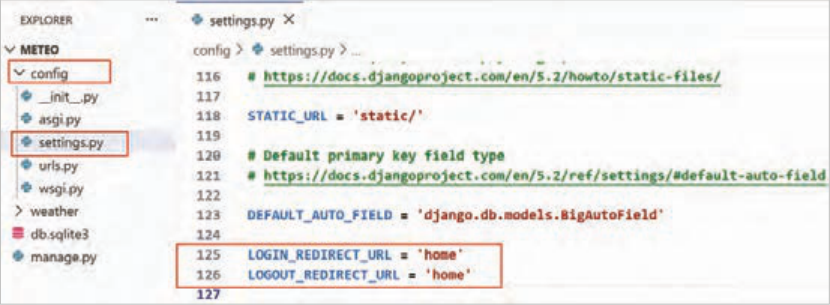
شکل 60 تنظیمات login و logout در settings.py
توضیحات کدها
خط 125: کاربر بعد از login موفق به صفحه home منتقل خواهد شد. home همان نامیاست که برای آدرس صفحه اصلی در urls.py تعریف شده است.
خط 126: کاربر بعد از logout موفق به صفحه home منتقل خواهد شد.
مرحله چهارم: در فایل show_temp.html، دکمههای ورود و خروج را همانند شکل 61 اضافه کنید.
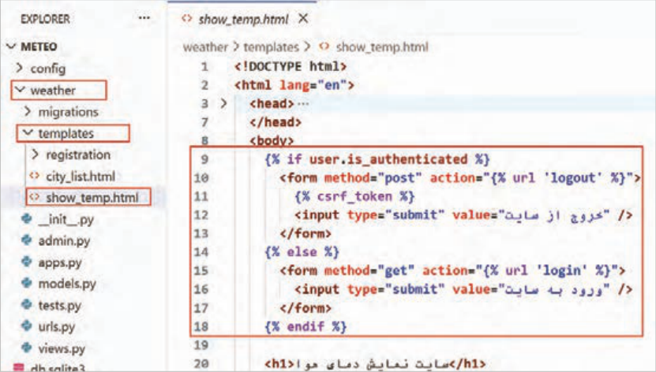
شکل 61 افزودن دکمه ورود و خروج به صفحه اصلی
صفحه ۳۱۷
توضیحات کدها:
خط 9: این دستور بررسی میکند که آیا کاربر وارد سیستم شده است یا خیر. اگر user.is_authenticated مقدار True داشته باشد؛ یعنی کاربر احراز هویت شده است و دستورات داخل این شرط اجرا خواهند شد.
خط 10: در این خط یک فرم HTML، تعریف شده است که درخواست را با متد POST به آدرس خروج از حساب کاربری ارسال میکند.
خط 14: از else استفاده شده است و به این معنی است، اگر کاربر login نباشد، چه چیزی به او نمایش داده شود.
خط 15: در این خط یک فرم با متد GET تعریف شده است که کاربر را به صفحه ورود به سایت یعنی صفحه login هدایت میکند.
اکنون فایلها را ذخیره کرده و سرور جنگو را متوقف و دوباره راهاندازی کنید. سپس صفحه اصلی سایت را refresh کنید. اگر کاربر login نکرده باشد، دکمه ورود به سایت را مشاهده میکند (شکل 62).
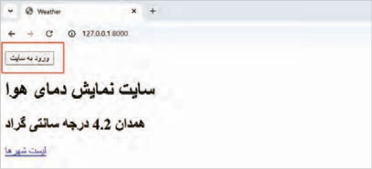
شکل 62 نمایش دکمه ورود برای کاربر مهمان
با کلیک روی دکمه ورود به سایت، کاربر به صفحه login منتقل میشود (شکل 63).
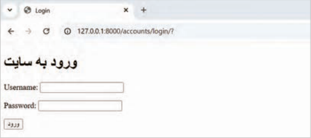
شکل 63 فرم ورود به سایت
صفحه ۳۱۸
پس از ورود موفق به سایت، کاربر به صفحه اصلی سایت منتقل شده و این بار دکمه خروج از سایت برای کاربر نمایش داده میشود.
درصورتیکه کاربر روی دکمه خروج از سایت کلیک کند، از سایت خارج شده و بلافاصله به صفحه اصلی منتقل خواهد شد.
ثبت شهر جدید با کاربر عضو سایت تاکنون فقط در پنل ادمین و با کاربر admin امکان ثبت شهرها را داشتید. اما این امکان وجود دارد که کاربرهای عضو سایت هم بتوانند بدون مراجعه به پنل ادمین، شهر جدید را ثبت کنند.
برای این کار میتوانید با استفاده از فرمهای جنگو و انجام چهار مرحلۀ زیر، این قابلیت را به سایت اضافه کنید.
1 ایجاد forms.py برای ساخت فرم ثبت شهر جدید
2 ساختن template ساده برای فرم
3 ساختن تابع add_city_view برای نمایش فرم
4 اضافهکردن path مخصوص فرم در فایل urls.py
5 قراردادن لینک «افزودن شهر» در صفحه اصلی مرحله اول: یک فایل جدید در پوشه weather با نام forms.py ایجاد کنید و همانند شکل 64 آن را تکمیل کنید.
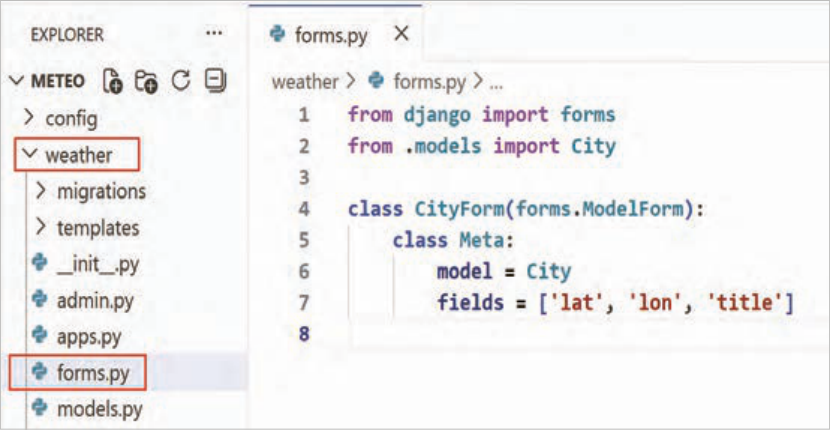
شکل 64 ایجاد CityForm
صفحه ۳۱۹
توضیحات کدها:
خط 1: ماژول forms درون این فایل import شده است. این ماژول همه کارهای مربوط به فرمها را پشتیبانی میکند.
خط 2: کلاس City از فایل model درون این فایل import شده است. City همان مدل شهرها است که قبًلا تعریف کردهایم.
خط 4: یک کلاس با نام CityForm ساخته شده است که از ModelForm ارثبری میکند.
خط 5: برای تعیین مدل و فیلدهایی که میخواهید نمایش داده شود باید از یک کلاس Meta در کلاس اصلی استفاده شود و در آن مدل و فیلدها مشخص گردد.
خط 6: کلاس City بهعنوان model تعیین شده است.
خط 7: لیست فیلدهایی که میخواهید نمایش داده شود، تعیین شده است.
مرحله دوم: فایل add_city.html را همانند شکل 65 ایجاد کنید.
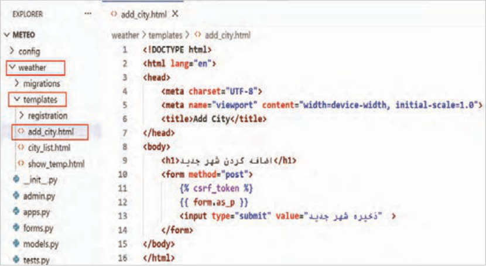
شکل 65 افزودن add_city.html
توضیحات کدها:
یک فرم با متد از نوع post ایجاد شده است. این فرم طول و عرض جغرافیایی و همچنین نام شهر را از کاربر گرفته و برای سرور جنگو ارسال میکند تا در دیتابیس ذخیره شود.
صفحه ۳۲۰
مرحله سوم: در فایل views.py تابع add_city_view را همانند شکل 66 اضافه کنید.
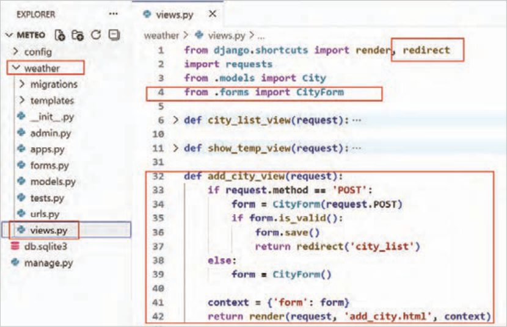
شکل 66 ایجاد view جهت افزودن شهر
توضیحات کدها:
خط 1: متد redirect درون این فایل import شده است.
خط 4: کلاس CityForm از فایل forms.py درون این فایل import شده است.
خط 33: اگر کاربر در صفحه «اضافهکردن شهر»، اطلاعات فرم را وارد کرده و دکمه «ذخیره شهر جدید» را کلیک کند، یک request از نوع post برای add_city_view ارسال میشود، در این خط نوع request با if بررسی شده است.
خط 34: یک فرم از CityForm براساس نوع درخواست ارسالشدۀ کاربر ایجاد و در متغیر form ذخیره شده است تا به کمک آن اطلاعاتی که کاربر بهوسیله آن فرم ارسال کرده است، ذخیره شود.
خط 35: تابع is_valid فیلدهای وارد شده کاربر را بررسی میکند. در request ارسال کاربر، باید فیلدهای اجباری مقدار گرفته باشند و همچنین نوع فیلدها صحیح باشد.
خط 36: در صورت معتبر بودن درخواست، اطلاعات در جدول city ذخیره خواهد شد.
خط 37: پس از ذخیره موفق اطلاعات شهر، کاربر به صفحه لیست شهرها منتقل خواهد شد.
خط 39: وقتی کاربر آدرس این صفحه را در مرورگر وارد میکند، یک درخواست از نوع GET اتفاق افتاده است، در این حالت، نوع request چیزی غیر از POST است، پس یک فرم جدید از CityForm ایجاد و در متغیر form ذخیره شده است تا فرم افزودن شهر به کاربر نمایش داده شود.
صفحه ۳۲۱
خط 41: فرم ساخته شده، در دیکشنری context قرار گرفته و در خط بعد به add_city.html ارسال شده است.
مرحله چهارم: در فایل urls.py مربوط به weather app یک path جدید همانند شکل 67 اضافه کنید.
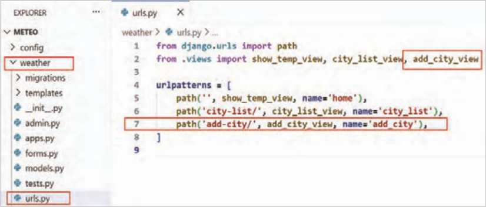
شکل 67 اضافهکردن path جدید برای افزودن شهر
توضیحات کدها:
یک path جدید جهت افزودن شهر اضافه شده است.
مرحله پنجم: در فایل show_temp.html یک لینک برای افزودن شهر، در خط 10 همانند شکل 68 اضافه کنید.
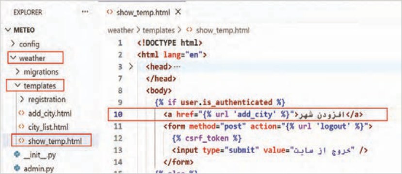
شکل 68 ایجاد لینک به صفحه افزودن شهر
صفحه ۳۲۲
اکنون همه فایلها را ذخیره و صفحه اصلی سایت را refresh کنید.
با دکمه [ورود به سایت] login کنید. لینک افزودن شهر برای شما نمایش داده خواهد شد (شکل 69).
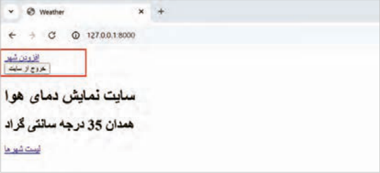
شکل 69 نمایش لینک پس از login کاربر
بر روی لینک «افزودن شهر» کلیک کنید، سپس همانند شکل 70، اطلاعات شهر موردنظر خود را وارد و دکمه ذخیره شهر جدید را کلیک کنید. در صورت ذخیره موفِق این فرم، کاربر به صفحه لیست شهرها منتقل و شهر اضافه شده به انتهای لیست افزوده خواهد شد.
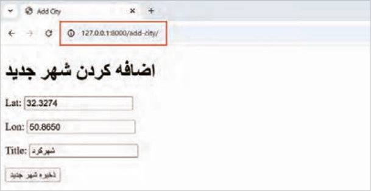
شکل 70 فرم اضافهکردن شهر جدید
حذف شهر با کاربر عضو سایت در این پروژه میتوانید امکان حذف شهرها را به کاربر عضو سایت بدهید، این کار را در سه مرحله میتوانید انجام دهید.
صفحه ۳۲۳
مرحله اول: یک view جدید با نام delete_city_view در views.py همانند شکل 71 ایجاد کنید.
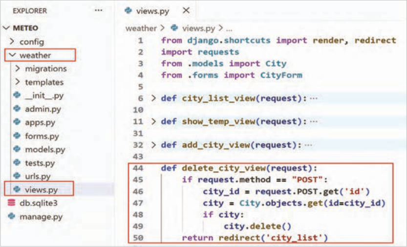
شکل 71 ساخت view جهت حذف شهرها
توضیحات کدها:
خط 49: دستور delete از ORM جنگو استفاده میکند و شهر انتخاب شده را از پایگاهداده حذف میکند.
خط 50: بعد از حذفکردن شهر، کاربر را به لیست شهرها منتقل میکند.
مرحله دوم: یک path جدید برای delete_city_view در urls.py همانند شکل 72 اضافه کنید.
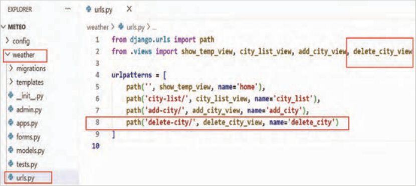
شکل 72 افزودن path جدید برای حذف شهرها
صفحه ۳۲۴
مرحله سوم: فایل city_list.html را همانند شکل 73 تغییر دهید.
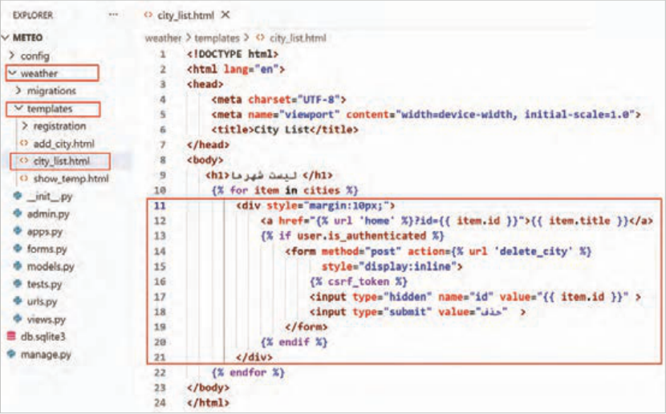
شکل 73 اضافهکردن دکمه حذف به city_list.html
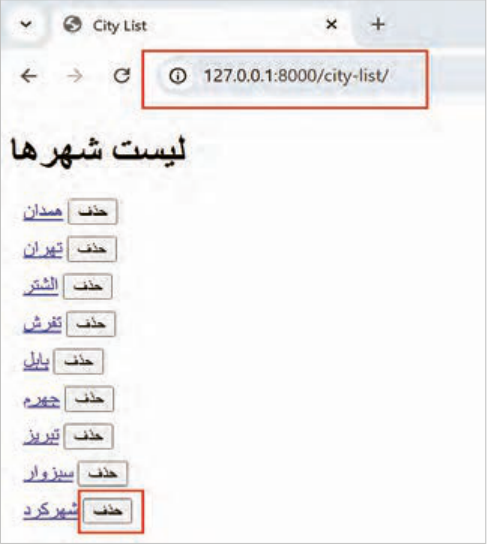
توضیحات کدها:
خط 13: این دستور باعث میشود دکمه حذف شهر فقط برای کاربر login شده نمایش داده شود.
خط 14: یک فرم با متد از نوع POST ایجاد شده است. در action این فرم، به _delete city اشاره شده است، یعنی درخواست حذف به view حذف شهر ارسال خواهد شد.
خط 17: آیدی شهر بهصورت یک فیلد مخفی (hidden) اضافه شده است. آیدی شهر در خروجی نمایش داده نخواهد شد.
فایلها را ذخیره کنید، صفحه لیست شهرها را باز کنید. خروجی همانند شکل 74 خواهد بود.
شکل 74 دکمه حذف در لیست شهرها
صفحه ۳۲۵
با کلیک روی لینک حذف مقابل هر شهر، شهر موردنظر حذف شده و لیست شهرها بهروزرسانی میشود.
درصورتیکه کاربر مهمان باشد، لینک حذف را مشاهده نخواهد کرد.
فعالیت
با دانشی که از پودمانهای قبل کسب کردهاید، ظاهر سایت را با html و css و bootstrap زیبا کنید.
بهینهسازی و امن کردن پروژه
در این مرحله، برای بهینهسازی پروژه، ایرادها و باگهای امنیتی پروژه بررسی میشوند.
باگ کدنویسی شماره یک:
اگر هیچ شهری در جدول City وجود نداشته باشد یا همه شهرها حذف شده باشند، در صفحه اصلی سایت خطایی همانند شکل 75 مشاهده خواهد شد.
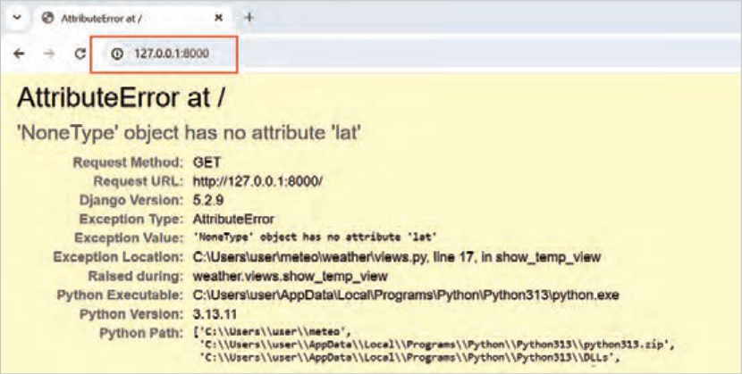
شکل 75 خطا در صورت خالی بودن جدول شهرها
صفحه ۳۲۶
باگ کدنویسی دوم:
اگر کاربر id شهر را در نوار آدرس مرورگر، دستی تغییر دهد و id وارد شده در پایگاهداده وجود نداشته باشد، در صفحه اصلی سایت خطایی همانند شکل 76 نمایش داده میشود.

شکل 76 خطا در صورت اشتباه بودن آیدی شهر
راهحل باگ اول و دوم: برای رفع این ایراد، کد show_temp_view را همانند شکل 77 تغییر دهید.

شکل 77 رفع ایراد کد
صفحه ۳۲۷
توضیحات کدها:
خط 14: بهجای استفاده از تابع get از تابع filter و first استفاده شده است. تابع get در صورتی خطا میدهد که مقدار موردنظر در دیتابیس وجود نداشته باشد. اما تابع filter این رفتار را ندارد و باعث بروز خطا نخواهد شد. پس باگ دوم را پوشش میدهد.
خط 17: درصورتیکه city مقدار نداشته باشد، درخواست به API آبوهوا ارسال نمیشود و مستقیمًا show_temp.html نمایش داده میشود. این خط نیز باگ اول را پوشش میدهد، قبل از اصلاح کدها اگر هیچ شهری در دیتابیس وجود نداشت، مقدار city برابر None میشد. پس هنگام دریافت lat کد به خطا میخورد. با تغییراتی که اعمال شد، این باگ برطرف شده است.
باگ امنیتی:
اگر کاربر عضو سایت نباشد، اما آدرس صفحه افزودن شهر و حذف شهرها را داشته باشد، بدون login در سایت میتواند، شهر اضافه کرده و یا شهر حذف نماید.
راهحل باگ امنیتی: برای رفع این ایراد، کد add_city_view را همانند شکل 78 تغییر دهید.

شکل 78 رفع باگ امنیتی کد
توضیحات کدها:
خط 36: درصورتیکه کاربر login نکرده باشد، در خط بعدی به صفحه login منتقل خواهد شد. همین کد را میتوانید برای delete_city_view هم استفاده کنید.
با این تغییرات، اگر کاربر login نباشد؛ ولی آدرس افزودن شهر و حذف شهر را در مرورگر وارد کند، به صفحه login منتقل خواهد شد.
کنجکاوی
بررسی کنید چه موارد دیگری میتواند این پروژه را بهبود دهد.
صفحه ۳۲۸
ارزشیابی شایستگی توسعه وب اپلیکیشن
استاندارد عملکرد کار: هنرجو بتواند با ساخت Model در جنگو و استفاده از فرم های HTML ارتباط با پایگاه داده را پیادهسازی کند و اطلاعاتی که کاربران وارد میکنند را در جداول ذخیره و بازیابی نماید.
نمره
شرایط انجام کار (ابزار،مواد، تجهیزات،
ابزارهای
نتایج
ردیف
مراحل کار
استاندارد (شاخصها/داوری/نمرهدهی)
کسب
زمان، مکان و ...)
ارزشیابی
ممکن شده
توضیح تفاوت بین ساختار پایگاهداده و جداول آن. شرح وظیفه و اهمیت ORM در جنگو.
شناخت اجزای اصلی پنل مدیریت جنگو و کاربرد آن. موفقیت در تعریف صحیح مدل City با فیلدهای لازم (مانند نام شهر، دما و …). کار با ORM: نوشتن
3
کوئریهای ساده با ORM برای خواندن (مثًلا City.objects.all()) دادهها.
موفقیت در ثبت City در پنل ادمین و امکان مشاهده، افزودن و ویرایش دادهها از طریق آن وارد کردن چند رکورد نمونه (چند شهر) به جدول از طریق پنل ادمین.
مشاهده انجام کنجکاویها انجام کار با چند روش عملی
DE: VS Code PostgreSQL فریمورک
پایگاهداده، ORM و پنل
پرسش
1
موفقیت در تعریف صحیح مدل City با فیلدهای لازم (مانند نام شهر، دما و
جنگو رایانه شخصی یا لپتاپ با سیستم عامل
مدیریت
کتبی …). کار با ORM: نوشتن کوئریهای ساده با ORM برای خواندن (مثًلا
زمان 25 دقیقه مکان سایت رایانه
آزمون
City.objects.all()) دادهها.
شفاهی
2
موفقیت در ثبت City در پنل ادمین و امکان مشاهده، افزودن و ویرایش دادهها از طریق آن وارد کردن چند رکورد نمونه (چند شهر) به جدول از طریق پنل ادمین.
توضیح تفاوت بین ساختار پایگاهداده و جداول آن. شرح وظیفه و اهمیت ORM در جنگو.
1
شناخت اجزای اصلی پنل مدیریت جنگو و کاربرد آن شناخت نقش views در پردازش درخواستها و ارسال پاسخ. درک نحوه ارسال داده از view به template (قالب HTML) آشنایی با مفاهیم اولیه تعامل کاربر (مانند کلیک روی لینک). ایجاد یک view و template برای نمایش لیستی از نام شهرها که از پایگاهداده خوانده شدهاند. پیادهسازی
3
مکانیزم انتخاب شهر (مثلاً با لینک یا فرم). ایجاد یک view که شهر انتخاب شده را دریافت کند. نمایش دمای مربوط به شهر انتخاب شده در صفحه.
مشاهده تعریف URLهای مناسب برای دسترسی به این قابلیتها.
DE: VS Code PostgreSQL
عملی
کار با دادهها و نمایش
فریمورک جنگو رایانه شخصی یا لپتاپ با پرسش
2
ایجاد یک view و template برای نمایش لیستی از نام شهرها که از
اطلاعات
سیستم عامل زمان 25 دقیقه مکان سایت کتبی
پایگاهداده خوانده شدهاند. پیادهسازی مکانیزم انتخاب شهر (مثلاً با لینک یا
رایانه
آزمون فرم). ایجاد یک view که شهر انتخاب شده را دریافت کند.
2
شفاهی نمایش دمای مربوط به شهر انتخاب شده در صفحه. تعریف URLهای مناسب برای دسترسی به این قابلیتها.
توضیح نقش views در پردازش درخواستها و ارسال پاسخ توضیح نحوه ارسال داده از view به template (قالب HTML) توضیح مفاهیم اولیه
1
تعامل کاربر (مانند کلیک روی لینک).
توضیح با فرایند احراز هویت (Login/Logout) در جنگو توضیح مفهوم سطوح دسترسی (Permissions) و چگونگی اعمال آنها شناخت مخاطرات امنیتی دسترسیهای غیرمجاز راهاندازی صحیح سیستم ورود کاربران.
3
اطمینان از اینکه صفحات افزودن و حذف شهر فقط برای کاربران وارد شده (عضو سایت) قابل دسترسی باشند موفقیت در پیادهسازی قابلیت افزودن شهر مشاهده جدید و حذف شهر موجود، فقط توسط کاربران وارد شده انجام کنجکاوی ها عملی
DE: VS Code PostgreSQL فریمورک
احراز هویت و مدیریت
پرسش
3
جنگو رایانه شخصی یا لپتاپ با سیستم عامل
راهاندازی صحیح سیستم ورود کاربران. اطمینان از اینکه صفحات افزودن و
دسترسیها
کتبی
زمان 25 دقیقه مکان سایت رایانه
حذف شهر فقط برای کاربران وارد شده (عضو سایت) قابل دسترسی باشند آزمون
2
موفقیت در پیادهسازی قابلیت افزودن شهر جدید و حذف شهر موجود، فقط شفاهی توسط کاربران وارد شده.
توضیح با فرایند احراز هویت (Login/Logout) در جنگو. توضیح مفهوم سطوح دسترسی (Permissions) و چگونگی اعمال آنها. توضیح مخاطرات
1
امنیتی و دسترسیهای غیرمجاز راهاندازی صحیح سیستم ورود کاربران.
صفحه ۳۲۹
شناسایی انواع باگهای کدنویسی (منطقی، اجرایی) درک اصول اولیه امنیت وب (مانند جلوگیری از تزریق کد، حملات CSRF و …).
آشنایی با مفاهیم اولیه بهینهسازی کد و عملکرد.
رفع باگ ۱ (جدول خالی): پیادهسازی منطق صحیح در view یا template برای مدیریت حالتی که جدول City خالی است، بدون ایجاد خطا. رفع باگ ۲ (تغییر ID در URL): پیادهسازی بررسی صحت id شهر
3
در view قبل از تلاش برای نمایش اطلاعات آن، جهت جلوگیری از خطا یا نمایش اطلاعات نادرست.
رفع باگ امنیتی (دسترسی غیرمجاز): اطمینان کامل از اینکه هیچ کاربری بدون Login نمیتواند به صفحات افزودن/حذف شهر دسترسی پیدا کند و مشاهده عملیات را انجام دهد.
عملی
DE: VS Code PostgreSQL فریمورک
ارائه کد تمیزتر و کارآمدتر (در صورت امکان، بسته به سطح دو
رفع اشکالات و بهینهسازی
پرسش
4
جنگو رایانه شخصی یا لپتاپ با سیستم عامل
امنیتی
کتبی رفع باگ ۱ (جدول خالی): پیادهسازی منطق صحیح در view یا template
زمان 30دقیقه مکان سایت رایانه
آزمون برای مدیریت حالتی که جدول City خالی است، بدون ایجاد خطا رفع شفاهی باگ ۲ (تغییر ID در URL): پیادهسازی بررسی صحت id شهر در view قبل از تلاش برای نمایش اطلاعات آن، جهت جلوگیری از خطا یا نمایش
2
اطلاعات نادرست.
رفع باگ امنیتی (دسترسی غیرمجاز): اطمینان کامل از اینکه هیچ کاربری بدون Login نمیتواند به صفحات افزودن/حذف شهر دسترسی پیدا کند و عملیات را انجام دهد.
شناسایی انواع باگهای کدنویسی (منطقی، اجرایی) درک اصول اولیه امنیت وب (مانند جلوگیری از تزریق کد، حملات CSRF و …).
1
آشنایی با مفاهیم اولیه بهینهسازی کد و عملکرد.
شایستگیهای غیر فنی، ایمنی،
احراز همه شایستگیهای غیرفنی2
بهداشت، توجهات زیست محیطی و نگرش:
عدم احراز هر یک از شایستگیهای غیرفنی1 بلی
ارزشیابی کار (شایستگی انجام کار)
خیر
توضیحات:
1 معیار شایستگی انجام کار:
کسب حداقل نمره 2 از مراحل 2 و 3 (مراحل بحرانی) کسب حداقل نمره 2 از بخش شایستگیهای غیرفنی، ایمنی، بهداشت، توجهات زیستمحیطی و نگرش کسب حداقل میانگین 2 از مراحل کار
2 تعریف سطوح شایستگی: صرفنظر از اینکه یک تکلیف کاری در چه سطحی از صلاحیت حرفهای انجام میشود، در هر محیط کاری ممکن است انجام هر کار با کیفیت مشخصی مورد انتظار باشد. سطح شایستگی انجام کار، معیار اساسی ارزشیابی است.
مهارت (سطح سه): ماهر و قادر به آموزش و هدایت دیگران، توانایی برنامهریزی و تحلیل، پاسخگویی در برابر کارهای خود، سروکار داشتن با سطح وسیعی از کارها و فعالیتها تسلط (سطح چهار): خبرگی در انجام کار و آموزش دیگران، ایجاد نوآوری، سازگاری، عیبیابی، هدایت و راهنمایی دیگران.